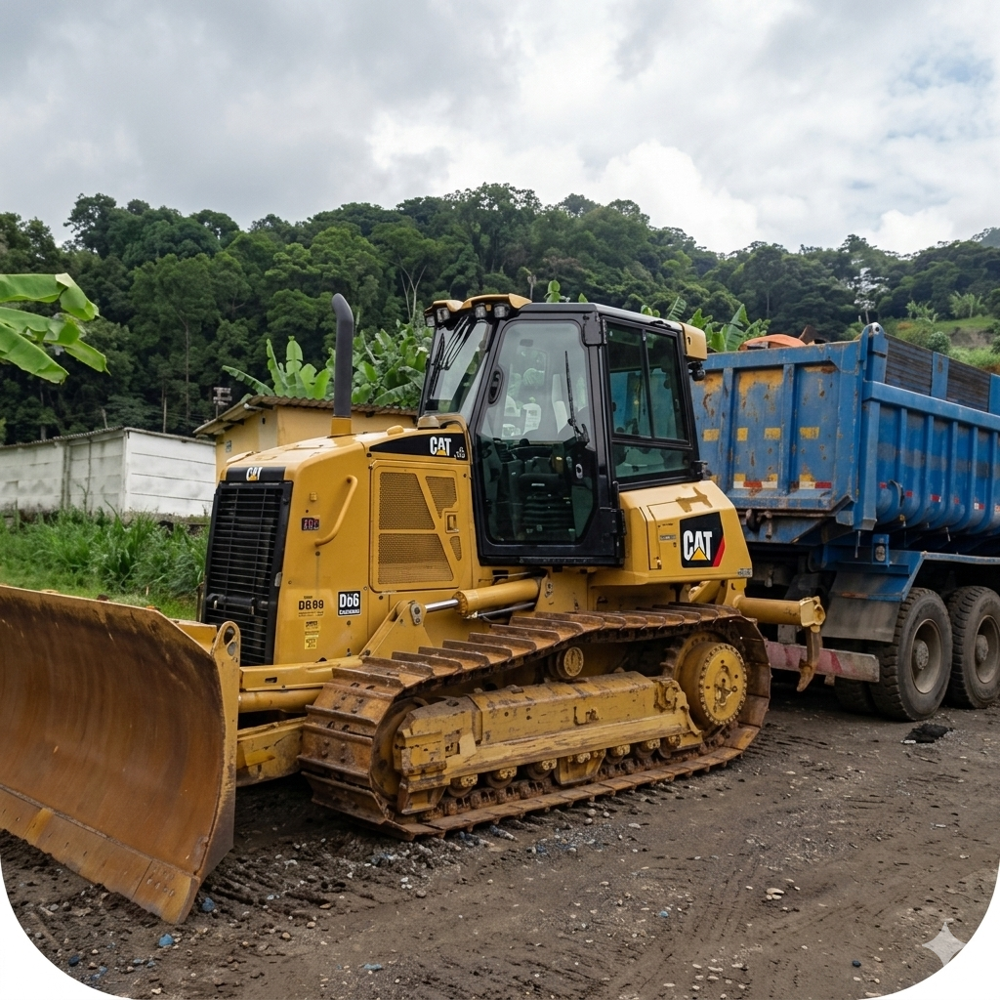
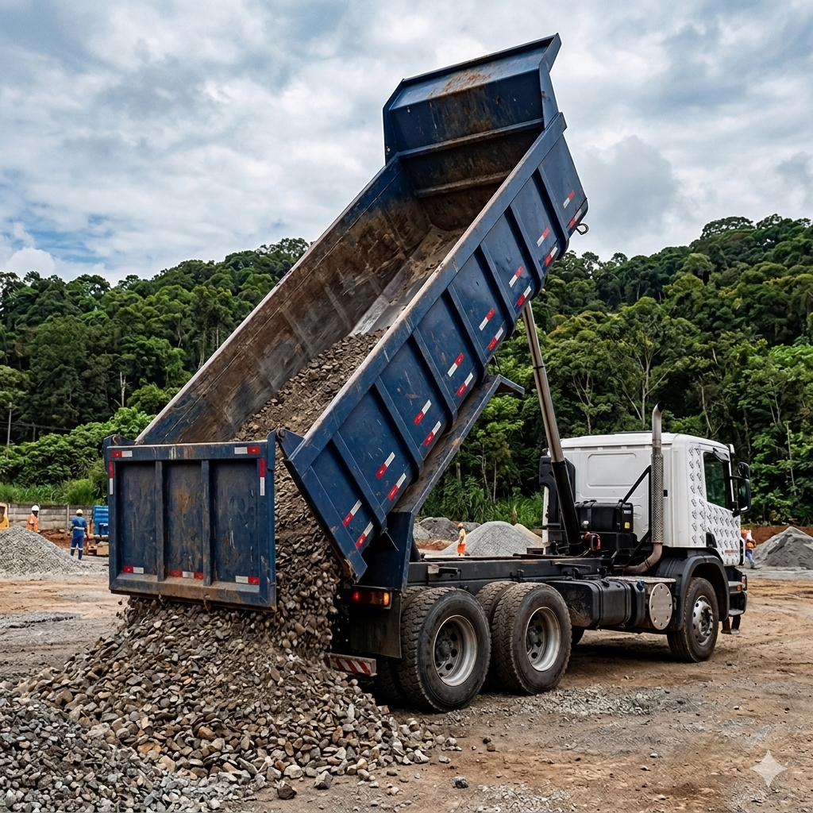

Seja
Bem Vindo!
A Transdominicana Transportes e Terraplanagem Ltda coloca à disposição de seus clientes soluções individualizadas, através de atendimento personalizado, para assegurar com eficiência e qualidade a prestação de bons serviços que acompanhem o desenvolvimento da sua empresa.
Começar Projeto →

